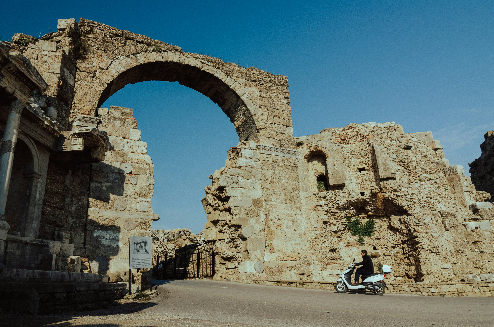

Side, Turkey, is a rare gem where a modern resort town is built literally on top of a 2,000-year-old Roman city. Known as the "Pomegranate" city (its name in the ancient Luwian language), it offers a stunning blend of turquoise waters and marble ruins.1. Top Places to VisitTemple of Apollo & Athena: The most iconic landmark in Side. Located at the very tip of the peninsula, these towering white columns overlook the sea. Tip: Visit at sunset for the most famous photo opportunity in Turkey.Side Antique Theatre: A massive 2nd-century Roman theatre that once seated 15,000 people. Unlike many Greek theaters built into hillsides, this is a freestanding Roman structure supported by massive arches.Side Archaeological Museum: Housed in a beautifully restored 5th-century Roman bathhouse. It contains...Side, Turkey, is a rare gem where a modern resort town is built literally on top of a 2,000-year-old Roman city. Known as the "Pomegranate" city (its name in the ancient Luwian language), it offers a stunning blend of turquoise waters and marble ruins.1. Top Places to VisitTemple of Apollo & Athena: The most iconic landmark in Side. Located at the very tip of the peninsula, these towering white columns overlook the sea. Tip: Visit at sunset for the most famous photo opportunity in Turkey.Side Antique Theatre: A massive 2nd-century Roman theatre that once seated 15,000 people. Unlike many Greek theaters built into hillsides, this is a freestanding Roman structure supported by massive arches.Side Archaeological Museum: Housed in a beautifully restored 5th-century Roman bathhouse. It contains a world-class collection of sarcophagi, statues, and coins found during local excavations.Manavgat Waterfall: Located about 15 minutes inland. While not very high, the wide, powerful flow of milky-blue water creates a refreshing atmosphere. There are shaded tea gardens nearby.The State Agora: Explore the ruins of the ancient library and the "Meryem Ana" (the hospital or bishop's palace), which showcases how grand the city's administrative center once was.Side East Beach: Generally quieter and more natural than the West Beach. It's bordered by ruins and sand dunes, perfect for a long walk or a peaceful swim.Aspendos Theater: A 30-minute drive from Side, this is widely considered the best-preserved Roman theater in the world. It is so intact that it still hosts opera and ballet festivals today.The Nymphaeum: Located near the main entrance to the old town, this was once a monumental three-story fountain. It serves as a grand introduction to the city's ancient scale.2. Food & DiningLocal Specialties to TryGözleme: Savory Turkish pancakes filled with spinach, cheese, or minced meat.Sac Tava: A traditional stir-fry of spiced lamb or chicken cooked in a thin iron wok.Side Pomegranate Juice: Freshly squeezed juice from local orchards.Grilled Octopus & Sea Bass: Since Side is a harbor town, the seafood is exceptionally fresh.Recommended RestaurantsKarma Restaurant & Night Club: For a more upscale experience, Karma offers stunning harbor views and a mix of high-end Turkish and International cuisine (try the Chateaubriand).Q Beach Restaurant: Located on the beachfront, famous for its relaxed vibe and excellent Garlic Prawns or Grilled Salmon.Gül Restaurant: A local favorite for authentic home-style cooking. Order the Mixed Grill or their homemade Manti (Turkish ravioli).Bardo Gelato: The best spot in town for a sweet treat; their artisanal gelato is perfect for cooling down after exploring ruins.3. 3-Day ItineraryDayMorningAfternoonEveningDay 1Explore the Ancient Theater and the Side Museum.Walk through the Old Town shops to the Harbor.Sunset at the Temple of Apollo, followed by dinner at the harbor.Day 2Take a taxi/bus to Manavgat Waterfall and the local market.Head to Side East Beach for swimming and relaxation.Try a traditional Turkish Hamam (bath) for total relaxation.Day 3Day trip to Aspendos Theater and the Ancient City of Perge.Return to Side for a Boat Tour along the coastline.Farewell dinner at a rooftop restaurant overlooking the ruins.4. Practical TipsTransport: Side’s old town is mostly pedestrian-only. Use the Dolmuş (shared minibuses) to get between Side and Manavgat or your hotel; they are frequent, cheap, and very easy to use.Best Season: April to June and September to October are ideal. July and August are extremely hot (often exceeding 35°C/95°F) and very crowded.Safety: Side is very safe for tourists. As with any hub, watch for "friendly" shopkeepers who may try to lure you into shops with tea—it's part of the culture, but a polite "No, thank you" (or "Hayır, teşekkürler") is fine.Cultural Tip: When visiting the nearby Manavgat Mosque, ensure shoulders and knees are covered. In Side's old town, casual beachwear is fine, but it’s respectful to dress slightly more modestly when dining in the village areas.Budget: * Budget: $40–$60/day (Street food, Dolmuş, public beaches).Mid-range: $80–$150/day (Sit-down meals, museum entries, private boat tours).Would you like me to find a list of the best-rated "All-Inclusive" resorts in Side or perhaps a more detailed breakdown of the Manavgat Market schedule?
Overview

Photo by Dmitri Sumar
1
Top Places to VisitTemple of Apollo & Athena: The most iconic landmark in Side.
Located at the very tip of the peninsula, these towering white columns overlook the sea. Tip: Visit at sunset for the most famous photo opportunity in Turkey.Side Antique Theatre: A massive 2nd-century Roman theatre that once seated 15,000 people. Unlike many Greek theaters built into hillsides, this is a freestanding Roman structure supported by massive arches.Side Archaeological Museum: Housed in a beautifully restored 5th-century Roman bathhouse. It contains a world-class collection of sarcophagi, statues, and coins found during local excavations.Manavgat Waterfall: Located about 15 minutes inland. While not very high, the wide, powerful flow of milky-blue water creates a refreshing atmosphere. There are shaded tea gardens nearby.The State Agora: Explore the ruins of the ancient library and the "Meryem Ana" (the hospital or bishop's palace), which showcases how grand the city's administrative center once was.Side East Beach: Generally quieter and more natural than the West Beach. It's bordered by ruins and sand dunes, perfect for a long walk or a peaceful swim.Aspendos Theater: A 30-minute drive from Side, this is widely considered the best-preserved Roman theater in the world. It is so intact that it still hosts opera and ballet festivals today.The Nymphaeum: Located near the main entrance to the old town, this was once a monumental three-story fountain. It serves as a grand introduction to the city's ancient scale.
2
Food & DiningLocal Specialties to TryGözleme: Savory Turkish pancakes filled with spinach, cheese, or minced meat.
Sac Tava: A traditional stir-fry of spiced lamb or chicken cooked in a thin iron wok.Side Pomegranate Juice: Freshly squeezed juice from local orchards.Grilled Octopus & Sea Bass: Since Side is a harbor town, the seafood is exceptionally fresh.Recommended RestaurantsKarma Restaurant & Night Club: For a more upscale experience, Karma offers stunning harbor views and a mix of high-end Turkish and International cuisine (try the Chateaubriand).Q Beach Restaurant: Located on the beachfront, famous for its relaxed vibe and excellent Garlic Prawns or Grilled Salmon.Gül Restaurant: A local favorite for authentic home-style cooking. Order the Mixed Grill or their homemade Manti (Turkish ravioli).Bardo Gelato: The best spot in town for a sweet treat; their artisanal gelato is perfect for cooling down after exploring ruins.3. 3-Day ItineraryDayMorningAfternoonEveningDay 1Explore the Ancient Theater and the Side Museum.Walk through the Old Town shops to the Harbor.Sunset at the Temple of Apollo, followed by dinner at the harbor.Day 2Take a taxi/bus to Manavgat Waterfall and the local market.Head to Side East Beach for swimming and relaxation.Try a traditional Turkish Hamam (bath) for total relaxation.Day 3Day trip to Aspendos Theater and the Ancient City of Perge.Return to Side for a Boat Tour along the coastline.Farewell dinner at a rooftop restaurant overlooking the ruins.
4
Practical TipsTransport: Side’s old town is mostly pedestrian-only.
Use the Dolmuş (shared minibuses) to get between Side and Manavgat or your hotel; they are frequent, cheap, and very easy to use.Best Season: April to June and September to October are ideal. July and August are extremely hot (often exceeding 35°C/95°F) and very crowded.Safety: Side is very safe for tourists. As with any hub, watch for "friendly" shopkeepers who may try to lure you into shops with tea—it's part of the culture, but a polite "No, thank you" (or "Hayır, teşekkürler") is fine.Cultural Tip: When visiting the nearby Manavgat Mosque, ensure shoulders and knees are covered. In Side's old town, casual beachwear is fine, but it’s respectful to dress slightly more modestly when dining in the village areas.Budget: * Budget: $40–$60/day (Street food, Dolmuş, public beaches).Mid-range: $80–$150/day (Sit-down meals, museum entries, private boat tours).Would you like me to find a list of the best-rated "All-Inclusive" resorts in Side or perhaps a more detailed breakdown of the Manavgat Market schedule?
Banks, ATMs (widely available), Exchange offices in Side center, Hotels. Currency: Turkish Lira (₺/TRY)
Shopping
Side local markets, Weekly bazaar, Shopping centers, Souvenir shops, Handicraft stores
Transportation
Dolmuş (shared minibus), Local buses in Side, Taxis (metered), Car rentals, Bicycle rentals
Language
Turkish (main), English spoken in tourist areas, German and Russian common in coastal regions
Tourist Info
Side tourist information office, Hotel concierge services, Local tour operators, Online travel resources
Side'ye Tam Seyahat Rehberi
Side, Türkiye, 2000 yıllık bir Roma şehrinin tam anlamıyla üzerine modern bir tatil kasabasının inşa edildiği nadir bir mücevherdir."Nar" şehri (eski Luvi dilindeki adı) olarak bilinen bu şehir, turkuaz sular ve mermer kalıntıların çarpıcı bir karışımını sunuyor.1.Gezilecek En İyi Yerler Apollon ve Athena Tapınağı: Side'nin en ikonik simgesi.Yarımadanın en ucunda yer alan bu yüksek beyaz sütunlar denize bakmaktadır.İpucu: Türkiye'nin en ünlü fotoğraf fırsatı için gün batımında ziyaret edin. Side Antik Tiyatrosu: Bir zamanlar 15.000 kişi kapasiteli, 2. yüzyıldan kalma devasa bir Roma tiyatrosu.Yamaçlara inşa edilmiş birçok Yunan tiyatrosundan farklı olarak bu, devasa kemerlerle desteklenen bağımsız bir Roma yapısıdır. Side Arkeoloji Müzesi: Güzel bir şekilde restore edilmiş 5. yüzyıldan kal...Side, Türkiye, 2000 yıllık bir Roma şehrinin tam anlamıyla üzerine modern bir tatil kasabasının inşa edildiği nadir bir mücevherdir."Nar" şehri (eski Luvi dilindeki adı) olarak bilinen bu şehir, turkuaz sular ve mermer kalıntıların çarpıcı bir karışımını sunuyor.1.Gezilecek En İyi Yerler Apollon ve Athena Tapınağı: Side'nin en ikonik simgesi.Yarımadanın en ucunda yer alan bu yüksek beyaz sütunlar denize bakmaktadır.İpucu: Türkiye'nin en ünlü fotoğraf fırsatı için gün batımında ziyaret edin. Side Antik Tiyatrosu: Bir zamanlar 15.000 kişi kapasiteli, 2. yüzyıldan kalma devasa bir Roma tiyatrosu.Yamaçlara inşa edilmiş birçok Yunan tiyatrosundan farklı olarak bu, devasa kemerlerle desteklenen bağımsız bir Roma yapısıdır. Side Arkeoloji Müzesi: Güzel bir şekilde restore edilmiş 5. yüzyıldan kalma bir Roma hamamında yer almaktadır.Yerel kazılarda bulunan lahitler, heykeller ve madeni paralardan oluşan dünya standartlarında bir koleksiyona sahiptir. Manavgat Şelalesi: Denizden yaklaşık 15 dakika içeride bulunmaktadır.Çok yüksek olmasa da süt mavisi suyun geniş, güçlü akışı ferahlatıcı bir atmosfer yaratır.Yakınlarda gölgeli çay bahçeleri vardır. Devlet Agorası: Antik kütüphanenin kalıntılarını ve şehrin idari merkezinin bir zamanlar ne kadar büyük olduğunu gösteren "Meryem Ana"yı (hastane veya piskopos sarayı) keşfedin. Side East Beach: Genel olarak Batı Plajı'ndan daha sessiz ve daha doğal.Kalıntılar ve kum tepeleriyle çevrilidir, uzun bir yürüyüş veya huzurlu bir yüzme için mükemmeldir. Aspendos Tiyatrosu: Side'ye arabayla 30 dakika uzaklıktaki bu tiyatro, dünyanın en iyi korunmuş Roma tiyatrosu olarak kabul edilir.O kadar sağlam ki, bugün hala opera ve bale festivallerine ev sahipliği yapıyor. Nymphaeum: Eski şehrin ana girişinin yakınında bulunan bu çeşme, bir zamanlar üç katlı anıtsal bir çeşmeydi.Kentin antik ölçeğine büyük bir giriş niteliğindedir.2.Yiyecek ve YemekDenecek Yöresel YemeklerGözleme: Ispanak, peynir veya kıyma ile doldurulmuş lezzetli Türk krepleri.Sac Tava: Baharatlı kuzu veya tavuğun ince demir tavada pişirildiği geleneksel bir tavada kızartma.Side Nar Suyu
Genel Bakış
Photo by Dmitri Sumar
2
Gün Manavgat Şelalesi'ne ve yerel pazara taksi/otobüse binin.
Bankalar, ATM'ler (her yerde mevcut), Side merkezinde döviz büroları, Oteller. Para birimi: Türk Lirası (₺/TRY)
Alışveriş
Side yerel pazarları, Haftalık pazar, Alışveriş merkezleri, Hediyelik eşya dükkanları, El sanatları mağazaları
Ulaşım
Dolmuş (minibüs), Side içi otobüsler, Taksiler (taksimetreli), Araç kiralama, Bisiklet kiralama
Dil
Türkçe (ana dil), Turistik bölgelerde İngilizce konuşulur, Sahil bölgelerinde Almanca ve Rusça yaygın
Turist Bilgi
Side turist danışma bürosu, Otel resepsiyon hizmetleri, Yerel tur operatörleri, Çevrimiçi seyahat kaynakları
Vollständiger Reiseführer für Side
Side in der Türkei ist ein seltenes Juwel, wo ein moderner Ferienort buchstäblich auf einer 2.000 Jahre alten römischen Stadt errichtet wurde.Sie ist als „Granatapfelstadt“ bekannt (ihr Name stammt aus der alten luwischen Sprache) und bietet eine atemberaubende Mischung aus türkisfarbenem Wasser und Marmorruinen.1.Top-SehenswürdigkeitenTempel des Apollon und der Athene: Das Wahrzeichen von Side.An der äußersten Spitze der Halbinsel gelegen, blicken diese hoch aufragenden weißen Säulen auf das Meer.Tipp: Besuchen Sie das Theater bei Sonnenuntergang, um das berühmteste Fotomotiv der Türkei zu genießen.Side Antique Theatre: Ein riesiges römisches Theater aus dem 2. Jahrhundert, das einst 15.000 Menschen Platz bot.Im Gegensatz zu vielen griechischen Theatern, die in Hügel gebaut wurden, handel...Side in der Türkei ist ein seltenes Juwel, wo ein moderner Ferienort buchstäblich auf einer 2.000 Jahre alten römischen Stadt errichtet wurde.Sie ist als „Granatapfelstadt“ bekannt (ihr Name stammt aus der alten luwischen Sprache) und bietet eine atemberaubende Mischung aus türkisfarbenem Wasser und Marmorruinen.1.Top-SehenswürdigkeitenTempel des Apollon und der Athene: Das Wahrzeichen von Side.An der äußersten Spitze der Halbinsel gelegen, blicken diese hoch aufragenden weißen Säulen auf das Meer.Tipp: Besuchen Sie das Theater bei Sonnenuntergang, um das berühmteste Fotomotiv der Türkei zu genießen.Side Antique Theatre: Ein riesiges römisches Theater aus dem 2. Jahrhundert, das einst 15.000 Menschen Platz bot.Im Gegensatz zu vielen griechischen Theatern, die in Hügel gebaut wurden, handelt es sich hierbei um ein freistehendes römisches Bauwerk, das von massiven Bögen getragen wird. Archäologisches Museum von Side: Untergebracht in einem wunderschön restaurierten römischen Badehaus aus dem 5. Jahrhundert.Es enthält eine Weltklasse-Sammlung von Sarkophagen, Statuen und Münzen, die bei lokalen Ausgrabungen gefunden wurden. Manavgat-Wasserfall: Liegt etwa 15 Minuten landeinwärts.Der breite, kraftvolle Fluss aus milchig-blauem Wasser ist zwar nicht sehr hoch, sorgt aber für eine erfrischende Atmosphäre.In der Nähe gibt es schattige Teegärten. Die State Agora: Erkunden Sie die Ruinen der alten Bibliothek und das „Meryem Ana“ (das Krankenhaus oder der Bischofspalast), das zeigt, wie großartig das Verwaltungszentrum der Stadt einst war. Side East Beach: Im Allgemeinen ruhiger und natürlicher als der West Beach.Es ist von Ruinen und Sanddünen umgeben und eignet sich perfekt für einen langen Spaziergang oder ein ruhiges Bad.Aspendos-Theater: Eine 30-minütige Fahrt von Side entfernt gilt es als das am besten erhaltene römische Theater der Welt.Es ist so intakt, dass hier noch heute Opern- und Ballettfestivals stattfinden. Das Nymphäum: In der Nähe des Haupteingangs zur Altstadt gelegen, war dies einst ein monumentaler dreistöckiger Brunnen.Es dient als großartige Einführung in das antike Ausmaß der Stadt.2.Essen und EssenLokale Spezialitäten zum ProbierenGözleme: Herzhafte türkische Pfannkuchen gefüllt mit Spinat, Käse oder Hackfleisch. Sac Tava: Eine traditionelle Pfanne aus gewürztem Lamm oder Huhn, gekocht in einem dünnen Eisenwok. Granatapfel-Jui als Beilage
Überblick
Photo by Dmitri Sumar
2
Jahrhundert, das einst 15.
000 Menschen Platz bot.Im Gegensatz zu vielen griechischen Theatern, die in Hügel gebaut wurden, handelt es sich hierbei um ein freistehendes römisches Bauwerk, das von massiven Bögen getragen wird. Archäologisches Museum von Side: Untergebracht in einem wunderschön restaurierten römischen Badehaus aus dem
5
Jahrhundert.
Es enthält eine Weltklasse-Sammlung von Sarkophagen, Statuen und Münzen, die bei lokalen Ausgrabungen gefunden wurden. Manavgat-Wasserfall: Liegt etwa 15 Minuten landeinwärts.Der breite, kraftvolle Fluss aus milchig-blauem Wasser ist zwar nicht sehr hoch, sorgt aber für eine erfrischende Atmosphäre.In der Nähe gibt es schattige Teegärten. Die State Agora: Erkunden Sie die Ruinen der alten Bibliothek und das „Meryem Ana“ (das Krankenhaus oder der Bischofspalast), das zeigt, wie großartig das Verwaltungszentrum der Stadt einst war. Side East Beach: Im Allgemeinen ruhiger und natürlicher als der West Beach.Es ist von Ruinen und Sanddünen umgeben und eignet sich perfekt für einen langen Spaziergang oder ein ruhiges Bad.Aspendos-Theater: Eine 30-minütige Fahrt von Side entfernt gilt es als das am besten erhaltene römische Theater der Welt.Es ist so intakt, dass hier noch heute Opern- und Ballettfestivals stattfinden. Das Nymphäum: In der Nähe des Haupteingangs zur Altstadt gelegen, war dies einst ein monumentaler dreistöckiger Brunnen.Es dient als großartige Einführung in das antike Ausmaß der Stadt.2.Essen und EssenLokale Spezialitäten zum ProbierenGözleme: Herzhafte türkische Pfannkuchen gefüllt mit Spinat, Käse oder Hackfleisch.Sac Tava: Eine traditionelle Pfanne aus gewürztem Lamm oder Huhn, gekocht in einem dünnen Eisenwok.Granatapfelsaft als Beilage: Frisch gepresster Saft aus lokalen Obstgärten.Gegrillter Oktopus und Wolfsbarsch: Da Side eine Hafenstadt ist, sind die Meeresfrüchte außergewöhnlich frisch.Empfohlene RestaurantsKarma Restaurant & Nachtclub: Für mehrKarma ist ein gehobenes Erlebnis und bietet einen atemberaubenden Blick auf den Hafen und eine Mischung aus erstklassiger türkischer und internationaler Küche (probieren Sie das Chateaubriand).Q Beach Restaurant: Direkt am Strand gelegen, berühmt für seine entspannte Atmosphäre und ausgezeichnete Knoblauchgarnelen oder gegrillten Lachs.Gül Restaurant: Ein lokaler Favorit für authentische Hausmannskost.Bestellen Sie den Mixed Grill oder die hausgemachten Manti (türkische Ravioli). Bardo Gelato: Der beste Ort der Stadt für eine süße Leckerei;Ihr hausgemachtes Eis eignet sich perfekt zum Abkühlen nach der Erkundung der Ruinen.3.3-tägige ReiserouteTagMorgenNachmittagAbendTag 1Erkunden Sie das antike Theater und das Side-Museum.Spazieren Sie durch die Geschäfte der Altstadt zum Hafen.Sonnenuntergang am Apollontempel, gefolgt von Abendessen im Hafen.Tag 2Nehmen Sie ein Taxi/Bus zum Manavgat-Wasserfall und zum örtlichen Markt.Fahren Sie nach S
Banken, Geldautomaten (weit verbreitet), Wechselstuben im Side Zentrum, Hotels. Währung: Türkische Lira (₺/TRY)
Einkaufen
Side lokale Märkte, Wochenmarkt, Einkaufszentren, Souvenirläden, Kunsthandwerksgeschäfte
Transport
Dolmuş (Sammeltaxi), Lokale Busse in Side, Taxis (mit Taxameter), Autovermietung, Fahrradverleih
Sprache
Türkisch (Hauptsprache), Englisch in Touristengebieten, Deutsch und Russisch in Küstenregionen verbreitet
Touristeninformation
Side Touristeninformationsbüro, Hotelconcierge-Service, Lokale Reiseveranstalter, Online-Reiseressourcen
Полный путеводитель по Сиде
Сиде в Турции — редкая жемчужина, где современный курортный город построен буквально на вершине 2000-летнего римского города.Известный как «Гранатовый» город (его название на древнем лувийском языке), он предлагает потрясающее сочетание бирюзовых вод и мраморных руин.Лучшие места для посещенияХрам Аполлона и Афины: самая знаковая достопримечательность Сиде.Эти высокие белые колонны, расположенные на самой оконечности полуострова, выходят на море.Совет: посетите на закате, чтобы сделать самую известную возможность сфотографироваться в Турции. Античный театр Сиде: огромный римский театр 2-го века, который когда-то вмещал 15 000 человек.В отличие от многих греческих театров, построенных на склонах холмов, это отдельно стоящее римское сооружение, поддерживаемое массивными арками. Археологическ...Сиде в Турции — редкая жемчужина, где современный курортный город построен буквально на вершине 2000-летнего римского города.Известный как «Гранатовый» город (его название на древнем лувийском языке), он предлагает потрясающее сочетание бирюзовых вод и мраморных руин.Лучшие места для посещенияХрам Аполлона и Афины: самая знаковая достопримечательность Сиде.Эти высокие белые колонны, расположенные на самой оконечности полуострова, выходят на море.Совет: посетите на закате, чтобы сделать самую известную возможность сфотографироваться в Турции. Античный театр Сиде: огромный римский театр 2-го века, который когда-то вмещал 15 000 человек.В отличие от многих греческих театров, построенных на склонах холмов, это отдельно стоящее римское сооружение, поддерживаемое массивными арками. Археологический музей в Сиде: расположен в прекрасно отреставрированной римской бане V века.Он содержит коллекцию саркофагов, статуй и монет мирового класса, найденных во время местных раскопок. Водопад Манавгат: расположен примерно в 15 минутах от берега.Хоть и не очень высокий, но широкий и мощный поток молочно-голубой воды создает освежающую атмосферу.Неподалеку расположены тенистые чайные сады. Государственная Агора: исследуйте руины древней библиотеки и «Мерием Ана» (больница или дворец епископа), который демонстрирует, насколько великим был когда-то административный центр города. Восточный пляж Сиде: в целом более тихий и естественный, чем Западный пляж.Он окружен руинами и песчаными дюнами, идеально подходящими для длительной прогулки или спокойного купания. Театр Аспендос: расположенный в 30 минутах езды от Сиде, этот театр считается наиболее хорошо сохранившимся римским театром в мире.Он настолько нетронут, что до сих пор здесь проводятся фестивали оперы и балета. Нимфей: когда-то это был монументальный трехэтажный фонтан, расположенный недалеко от главного входа в старый город.Он служит грандиозным знакомством с древним масштабом города.2.Еда и рестораныМестные деликатесы, которые стоит попробовать Гёзлеме: пикантные турецкие блины с начинкой из шпината, сыра или мясного фарша. Сак Тава: традиционное жаркое из пряной баранины или курицы, приготовленное в тонком чугунном воке. Гранатовый соус.
Обзор
Photo by Dmitri Sumar
Сиде в Турции — редкая жемчужина, где современный курортный город построен буквально на вершине 2000-летнего римского города.Известный как «Гранатовый» город (его название на древнем лувийском языке), он предлагает потрясающее сочетание бирюзовых вод и мраморных руин.Лучшие места для посещенияХрам Аполлона и Афины: самая знаковая достопримечательность Сиде.Эти высокие белые колонны, расположенные на самой оконечности полуострова, выходят на море.Совет: посетите на закате, чтобы сделать самую известную возможность сфотографироваться в Турции. Античный театр Сиде: огромный римский театр 2-го века, который когда-то вмещал 15 000 человек.В отличие от многих греческих театров, построенных на склонах холмов, это отдельно стоящее римское сооружение, поддерживаемое массивными арками. Археологический музей в Сиде: расположен в прекрасно отреставрированной римской бане V века.Он содержит коллекцию саркофагов, статуй и монет мирового класса, найденных во время местных раскопок. Водопад Манавгат: расположен примерно в 15 минутах от берега.Хоть и не очень высокий, но широкий и мощный поток молочно-голубой воды создает освежающую атмосферу.Неподалеку расположены тенистые чайные сады. Государственная Агора: исследуйте руины древней библиотеки и «Мерием Ана» (больница или дворец епископа), который демонстрирует, насколько великим был когда-то административный центр города. Восточный пляж Сиде: в целом более тихий и естественный, чем Западный пляж.Он окружен руинами и песчаными дюнами, идеально подходящими для длительной прогулки или спокойного купания. Театр Аспендос: расположенный в 30 минутах езды от Сиде, этот театр считается наиболее хорошо сохранившимся римским театром в мире.Он настолько нетронут, что до сих пор здесь проводятся фестивали оперы и балета. Нимфей: когда-то это был монументальный трехэтажный фонтан, расположенный недалеко от главного входа в старый город.Он служит грандиозным знакомством с древним масштабом города.2.Еда и рестораныМестные деликатесы, которые стоит попробоватьГёзлеме: пикантные турецкие блины с начинкой из шпината, сыра или мясного фарша. Сак-тава: традиционное жаркое из пряной баранины или курицы, приготовленное в тонком чугунном воке. Гранатовый сок: свежевыжатый сок из местных садов. Осьминог и морской окунь на гриле: поскольку Сиде — портовый город, морепродукты исключительно свежие. Рекомендуемые рестораны Ресторан «Карма»& Ночной клуб: Для более высококлассных впечатлений Karma предлагает потрясающий вид на гавань и сочетание высококлассной турецкой и интернациональной кухни (попробуйте Chateaubriand). Ресторан Q Beach: расположен на берегу моря, известен своей непринужденной атмосферой и превосходными чесночными креветками или лососем на гриле. Ресторан Gül: местный фаворит, предлагающий аутентичную домашнюю кухню.Закажите микс-гриль или домашние манти (турецкие равиоли).
Долмуш (маршрутное такси), местные автобусы в Side, такси (по счетчику), аренда автомобилей, прокат велосипедов
Язык
Турецкий (основной), английский в туристических районах, немецкий и русский распространены в прибрежных регионах
Туристическая информация
Туристический информационный офис Side, услуги консьержа отеля, местные туроператоры, онлайн-ресурсы для путешественников
Повний путівник по Сіде
Сіде, Туреччина, є рідкісною перлиною, де сучасне курортне місто побудоване буквально на вершині 2000-річного римського міста.Відоме як «Гранатове» місто (його назва стародавньою лувійською мовою), воно пропонує приголомшливе поєднання бірюзових вод і мармурових руїн.1.Найкращі місця для відвідування. Храм Аполлона й Афіни: найвідоміша пам’ятка Сіде.Ці високі білі колони, розташовані на самому краю півострова, виходять на море.Порада: відвідайте на заході сонця, щоб отримати найвідомішу можливість для фотографій у Туреччині. Античний театр у Сіде: величезний римський театр 2-го століття, який колись вміщував 15 000 людей.На відміну від багатьох грецьких театрів, побудованих на схилах пагорбів, це окремо стояча римська споруда, що підтримується масивними арками. Бічний археологічний музей: ...Сіде, Туреччина, є рідкісною перлиною, де сучасне курортне місто побудоване буквально на вершині 2000-річного римського міста.Відоме як «Гранатове» місто (його назва стародавньою лувійською мовою), воно пропонує приголомшливе поєднання бірюзових вод і мармурових руїн.1.Найкращі місця для відвідування. Храм Аполлона й Афіни: найвідоміша пам’ятка Сіде.Ці високі білі колони, розташовані на самому краю півострова, виходять на море.Порада: відвідайте на заході сонця, щоб отримати найвідомішу можливість для фотографій у Туреччині. Античний театр у Сіде: величезний римський театр 2-го століття, який колись вміщував 15 000 людей.На відміну від багатьох грецьких театрів, побудованих на схилах пагорбів, це окремо стояча римська споруда, що підтримується масивними арками. Бічний археологічний музей: розташований у чудово відреставрованій римській лазні 5-го століття.Він містить колекцію світового класу саркофагів, статуй і монет, знайдених під час місцевих розкопок. Водоспад Манавгат: розташований приблизно за 15 хвилин углиб країни.Не дуже високий, але широкий потужний потік молочно-блакитної води створює освіжаючу атмосферу.Поруч є затінені чайні сади. Державна агора: досліджуйте руїни стародавньої бібліотеки та «Мер’єм Ана» (лікарня або палац єпископа), який демонструє, яким величним колись був адміністративний центр міста. Бічний східний пляж: загалом тихіший і природніший, ніж Західний пляж.Він межує з руїнами та піщаними дюнами, ідеально підходить для довгої прогулянки або спокійного плавання. Театр Аспендос: розташований за 30 хвилин їзди від Сіде, він вважається найкраще збереженим римським театром у світі.Він настільки недоторканий, що в ньому й сьогодні проводять фестивалі опери та балету. Німфеум: розташований біля головного входу в старе місто, це колись був монументальний триповерховий фонтан.Він служить урочистим вступом до стародавнього масштабу міста.2.Їжа та рестораниМісцеві фірмові стравиGözleme: пікантні турецькі млинці, начинені шпинатом, сиром або фаршем. Sac Tava: традиційне смажене м’ясо баранини або курки, приправлене спеціями, у тонкій залізній сковороді воке. Side Pomegranate Jui
Огляд
Photo by Dmitri Sumar
Сіде, Туреччина, є рідкісною перлиною, де сучасне курортне місто побудоване буквально на вершині 2000-річного римського міста.Відоме як «Гранатове» місто (його назва стародавньою лувійською мовою), воно пропонує приголомшливе поєднання бірюзових вод і мармурових руїн.1.Найкращі місця для відвідування. Храм Аполлона й Афіни: найвідоміша пам’ятка Сіде.Ці високі білі колони, розташовані на самому краю півострова, виходять на море.Порада: відвідайте на заході сонця, щоб отримати найвідомішу можливість для фотографій у Туреччині. Античний театр у Сіде: величезний римський театр 2-го століття, який колись вміщував 15 000 людей.На відміну від багатьох грецьких театрів, побудованих на схилах пагорбів, це окремо стояча римська споруда, що підтримується масивними арками. Бічний археологічний музей: розташований у чудово відреставрованій римській лазні 5-го століття.Він містить колекцію світового класу саркофагів, статуй і монет, знайдених під час місцевих розкопок. Водоспад Манавгат: розташований приблизно за 15 хвилин углиб країни.Не дуже високий, але широкий потужний потік молочно-блакитної води створює освіжаючу атмосферу.Поруч є затінені чайні сади. Державна агора: досліджуйте руїни стародавньої бібліотеки та «Мер’єм Ана» (лікарня або палац єпископа), який демонструє, яким величним колись був адміністративний центр міста. Бічний східний пляж: загалом тихіший і природніший, ніж Західний пляж.Він межує з руїнами та піщаними дюнами, ідеально підходить для довгої прогулянки або спокійного плавання. Театр Аспендос: розташований за 30 хвилин їзди від Сіде, він вважається найкраще збереженим римським театром у світі.Він настільки недоторканий, що в ньому й сьогодні проводять фестивалі опери та балету. Німфеум: розташований біля головного входу в старе місто, це колись був монументальний триповерховий фонтан.Він служить урочистим вступом до стародавнього масштабу міста.2.Їжа та рестораниМісцеві фірмові стравиGözleme: пікантні турецькі млинці, начинені шпинатом, сиром або фаршем.
Sac Tava
традиційне смажене м’ясо баранини або курки зі спеціями, приготоване в тонкому залізному воке. Гранатовий сік: свіжовичавлений сік із місцевих фруктових садів. Восьминіг і морський окунь на грилі: оскільки Сіде є портовим містом,морепродукти винятково свіжі. Рекомендовані ресторани Ресторан і нічний клуб Karma: для більш висококласних вражень, Karma пропонує приголомшливий вид на гавань і поєднання вишуканої турецької та інтернаціональної кухні (спробуйте Chateaubriand). Пляжний ресторан Q: розташований на березі моря, відомий своєю спокійною атмосферою та чудовими креветками з часником або лососем на грилі. Ресторан Gül: місцевий фаворит справжньої домашньої кухні.Замовте Mixed Grill або їхні домашні Manti (турецькі равіолі).